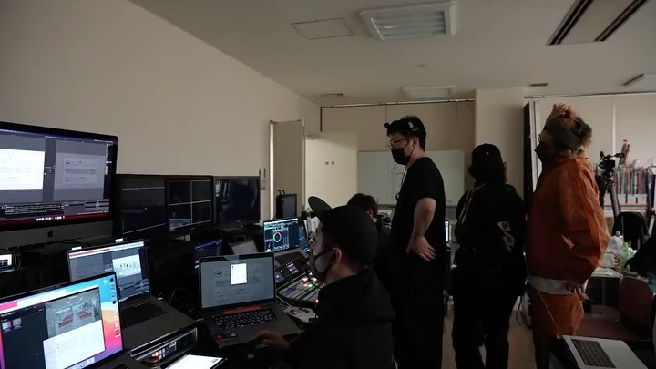
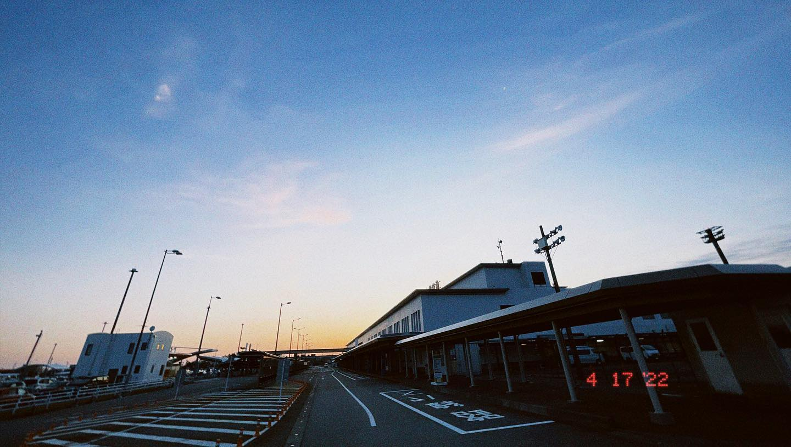
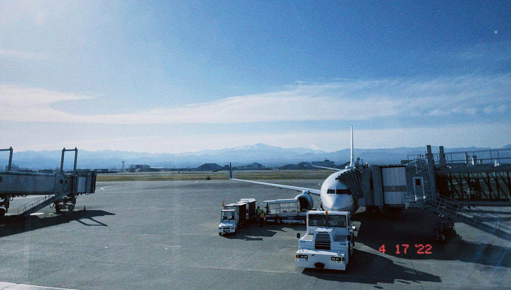
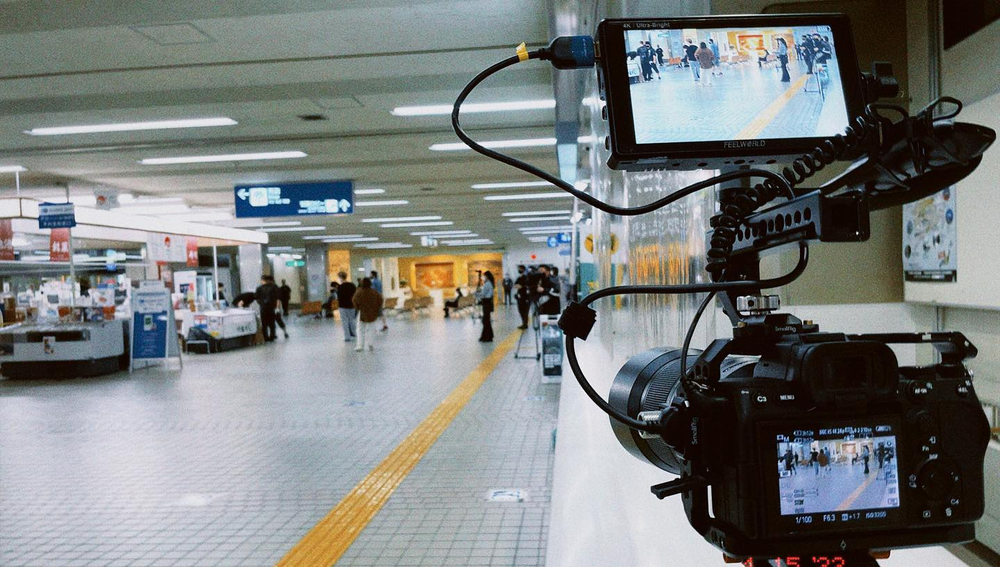
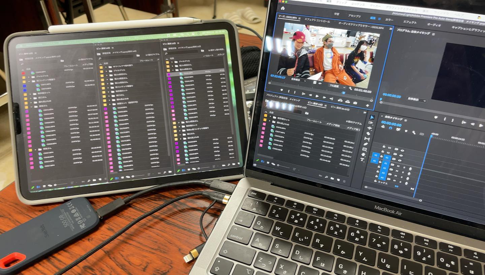
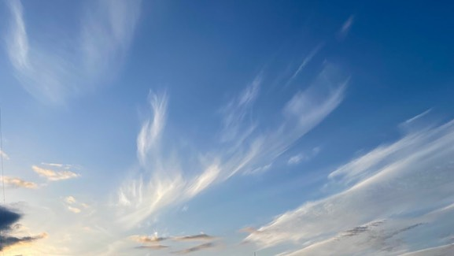

MOVIE
ジャルジャルさん主演のオンライン演劇 ｢夢路空港｣







.
【Documentary work】
ジャルジャルさん主演のオンライン演劇
｢夢路空港｣
メイキング担当として、リハーサルから本番までの撮影と、特典映像4本の編集をさせて頂きました。
https://no.meets.ltd/yumejikuko/story.html
｢夢路空港｣という"静"の舞台の裏側の"動"
静寂の裏の熱量と喧騒
前田さんの飾らなさと、包容力
荒牧さんの纏う空気と、対応力
清宮さんの笑顔と、真っ直ぐな決意
本編が静かに流れていくからこそ、メイキングはその裏にある想いを残そうと制作させてもらいました。
皆さんに届いていれば嬉しいです。
GW終わりの5月8日まで配信していますので、夜のお供にぜひ。
(特典付きチケットを買っていただけると、森川が必死こいて回したメイキング映像も見られるので、もしよろしければ…笑)